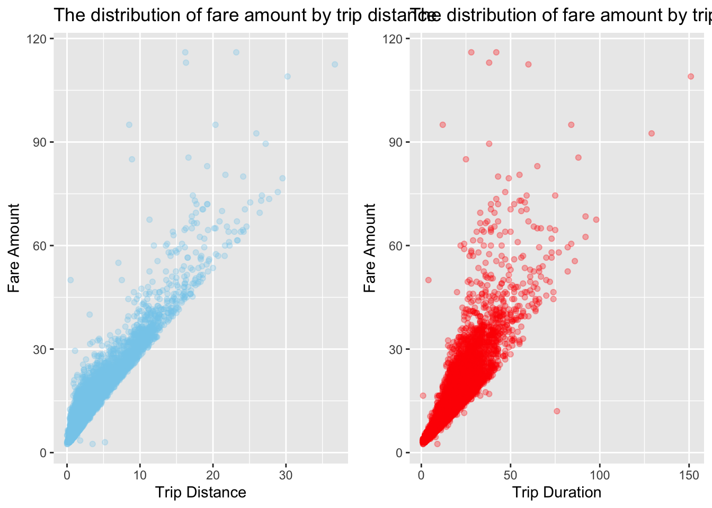
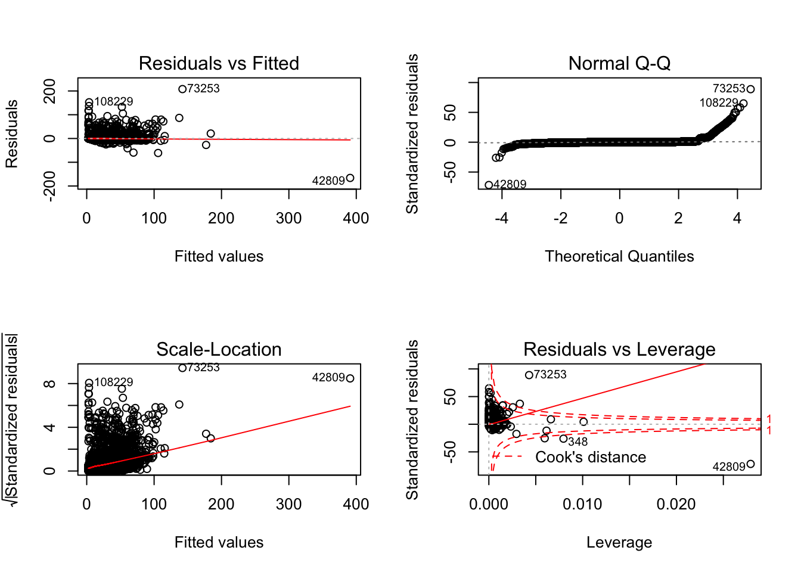

Regression Analysis
Motivation
Fare Amount
The initial charge of NYC Yellow Cab is 2.5 dollars. However, the rule of standard metered fair is too complicated. It is difficult for a passenger to estimate the fare amount refering to such complext instructions.
NYC Taxi Fare
According to the codebook from the TLC website, the fare amount is defined as “The time-and-distance fare calculated by the meter”. Therefore, we hope to explore the association between fare amount and trip distance and duration. If possible, we also want to roughly predict the fare amount by duration and distance.
Data was queried from year 2018. The duration is calculated from drop-off time and pick-up time.
Scatterplot of fare amount
 According to the scatterplots, there is a positive relationship among trip distance and fare amount. trip duration is also positively associated with fare amount.
Building linear regression model of fare amount
The outcome of linear regression model is fare amount, and the predictors include trip distance and duration.
| term | estimate | std.error | statistic | p.value |
|---|---|---|---|---|
| (Intercept) | 2.0619564 | 0.0116049 | 177.6801 | 0 |
| duration | 0.3339642 | 0.0010225 | 326.6167 | 0 |
| trip_distance | 2.0691460 | 0.0034875 | 593.3077 | 0 |
| r.squared | adj.r.squared | sigma | statistic | p.value | df |
|---|---|---|---|---|---|
| 0.9384185 | 0.9384174 | 2.344449 | 874705.2 | 0 | 3 |
| The p-value | of the two coeff | icients are | both < 0.05 | . It is se | en that both variables (duration, trip_distance) are statistically significant at 5 % level of significance. |
Diagnostics
Further we can plot the model diagnostic checking for other problems such as normality of error term, heteroscedasticity etc. 
The plots indicate a lot of outliers, which make the model violate the linear regression assumptions.
In addition, we realized that the duration will increase if the trip distance increased. Therefore, possibly there is multicollinearity problem in this model as well. For further diagnosis of the problem, let us first look at the pair-wise correlation among the explanatory variables.
##
## Call:
## omcdiag(x = pred, y = reg$fare_amount)
##
##
## Overall Multicollinearity Diagnostics
##
## MC Results detection
## Determinant |X'X|: 0.4295 0
## Farrar Chi-Square: 97015.0331 1
## Red Indicator: 0.7553 1
## Sum of Lambda Inverse: 4.6563 0
## Theil's Method: 0.2025 0
## Condition Number: 5.0686 0
##
## 1 --> COLLINEARITY is detected by the test
## 0 --> COLLINEARITY is not detected by the test## $estimate
## trip_distance duration
## trip_distance 1.0000000 0.7552958
## duration 0.7552958 1.0000000
##
## $p.value
## trip_distance duration
## trip_distance 0 0
## duration 0 0
##
## $statistic
## trip_distance duration
## trip_distance 0.0000 390.4774
## duration 390.4774 0.0000
##
## $n
## [1] 114804
##
## $gp
## [1] 0
##
## $method
## [1] "pearson"##
## Call:
## imcdiag(x = pred, y = reg$fare_amount)
##
##
## All Individual Multicollinearity Diagnostics Result
##
## VIF TOL Wi Fi Leamer CVIF Klein IND1 IND2
## trip_distance 2.3281 0.4295 152472.6 Inf 0.6554 -0.2273 0 0 1
## duration 2.3281 0.4295 152472.6 Inf 0.6554 -0.2273 0 0 1
##
## 1 --> COLLINEARITY is detected by the test
## 0 --> COLLINEARITY is not detected by the test
##
## * all coefficients have significant t-ratios
##
## R-square of y on all x: 0.9384
##
## * use method argument to check which regressors may be the reason of collinearity
## ===================================The VIF, TOL and Wi columns provide the diagnostic output for variance inflation factor, tolerance and Farrar-Glauber F-test respectively. Since VIF<10 and TOL>0.1, there is no multicolinearity in the regression model.
Tip percent
In addition ot fare amount, we are also interested in the factors that may effect tip percent in each trip.

##
## Call:
## lm(formula = tip_percent ~ passenger_count, data = reg_plot %>%
## filter(payment_type == 1))
##
## Coefficients:
## (Intercept) passenger_count
## 0.2118804 0.0001772